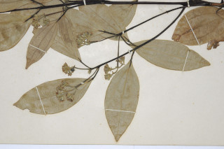
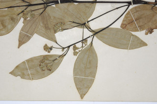

Trees up to 8 m tall.
8 ಮೀ.ವರೆವಿಗೆ ಬೆಳೆಯುವ ಮರಗಳು.
8 മീറ്റര് വരെ ഉയരമുളള മരങ്ങള്.
மரங்கள் 8 மீ. உயரம் வரை வளரக்கூடியது
Branchlets slender, angular, minutely densely adpressed hairs
ಕಿರುಕೊಂಬೆಗಳು ತೆಳುವಾಗಿದ್ದು ಕೋನಯುಕ್ತವಾಗಿರುತ್ತದೆ ಮತ್ತು ದಟ್ಟವಾದ, ಅಪ್ಪು ರೋಮಗಳಿಂದ ಆವೃತವಾಗಿರುತ್ತವೆ.
സൂക്ഷ്മമായി, കനത്തില്, അടങ്ങിയ രോമങ്ങള് നിറഞ്ഞ കോണുളള നേര്ത്ത ഉപശാഖകള്.
சிறிய நுனிக்கிளைகள் மெல்லியது, கோணங்களுடையது நுண்ணிய உரோமங்களை அடர்த்தியாக கொண்டவை.
Leaves simple, opposite to subopposite; petiole 1 cm; lamina 6-11 x 1.5-4 cm, elliptic or subovate-elliptic, apex shortly acuminate with blunt tip, base cuneate to attenuate, margin entire, young leaves sericeous beneath, later glabrous, subcoriaceous; trinerved, suprabasal, laterals not reaching the leaf apex; tertiary_nerves horizontally_percurrent; higher order nerves minutely reticulate.
ಎಲೆಗಳು ಸರಳವಾಗಿದ್ದು,ಅಭಿಮುಖದಿಂದ ಉಪಅಭಿಮುಖ ಮಾದರಿಯಲ್ಲಿ ಜೋಡನೆಗೊಂಡಿರುತ್ತವೆ;ತೊಟ್ಟುಗಳು 1 ಸೆಂ.ಮೀ. ಉದ್ದವಿರುತ್ತದೆ;ಪತ್ರಗಳು 6-11 x 1.5 - 4 ಸೆಂ.ಮೀ.ವರೆಗಿನ ಗಾತ್ರ ಹೊಂದಿದ್ದು ಅಂಡವೃತ್ತ ಅಥವಾ ಉಪಬುಗುರಿ -ಅಂಡವೃತ್ತ ಆಕಾರದಲ್ಲಿರುತ್ತವೆ. ಪತ್ರದ ತುದಿ ಕಿರಿದಾದ ಕ್ರಮೇಣ ಚೂಪಾಗುವ ಮಾದರಿಯಲ್ಲಿದ್ದು ಮೊಂಡಾದ ಅಗ್ರವನ್ನು ಹೊಂದಿರುತ್ತದೆ;ಬುಡ ಬೆಣೆಯಾಕಾರದಿಂದ ಒಳಬಾಗುವ ರೀತಿಯಲ್ಲಿರುತ್ತದೆ;ಅಂಚು ನಯವಾಗಿರುತ್ತದೆ;ಪತ್ರಗಳ ಮೇಲ್ಮೈ ಉಪ-ತೊಗಲನ್ನೋಲುವ ಮಾದರಿಯಲ್ಲಿದ್ದು ಎಳೆಯದಾಗಿದ್ದಾಗ ತಳಭಾಗದಲ್ಲಿ ರೇಷ್ಮೆಯಂತಹ ತುಪ್ಪಳವನ್ನು ಹೊಂದಿರುತ್ತದೆ ಮತ್ತು ನಂತರ ರೋಮರಹಿತವಾಗಿರುತ್ತದೆ; ಪತ್ರಗಳು 3 ಆಧಾರ ನಾಳಗಳನ್ನು ಹೊಂದಿದ್ದು ಪಾರ್ಶ್ವ ನಾಳಗಳು ಎಲೆಯ ಅಗ್ರವನ್ನು ತಲುಪುವುದಿಲ್ಲ;ಮೂರನೇ ದರ್ಜೆಯ ನಾಳಗಳು ಲಂಬ ರೇಖೆಗೆ ಸಮಕೋನದಲ್ಲಿರುತ್ತವೆ ಹಾಗೂ ಎಲೆದಿಂಡಿಗೆ ಅಡ್ಡವಾಗಿ ಕೂಡುತ್ತವೆ;ಉನ್ನತ ದರ್ಜೆಯ ನಾಳಗಳು ಸೂಕ್ಷ್ಮ-ಜಾಲಬಂಧ ನಾಳ ವಿನ್ಯಾಸದಲ್ಲಿರುತ್ತವೆ.
ലഘുവായ ഇലകള് സമുഖം തൊട്ട് ഉപസമ്മുഖം വരെയാകാം; ഇലഞെട്ടിന് 1 സെ.മീ നീളം, പത്രഫലകത്തിന് 6 സെ.മീ തൊട്ട് 11 സെ.മീ വരെ നീളവും 1.5 സെ.മീ തൊട്ട് 4 സെ.മീ വരെ വീതിയും, ആകൃതി ദീര്ഘവൃത്താകാരമോ ഉപഅണ്ഡാകാര-ദീര്ഘവൃത്തീയമോ ആവാം, മുനപ്പില്ലാത്ത അറ്റത്തോടുകൂടിയ ചെറുദീര്ഘപത്രാഗ്രം, പത്രാധാരം ആപ്പാകാരം തൊട്ട് നീണ്ട് നേര്ത്തതാവാം, അരികുകള് അവിഭജിതം, ഇളംഇലകള് കീഴെ, കനത്തില് നേരെയുളള സില്ക്ക് രോമങ്ങള് നിറഞ്ഞതാണ്, പിന്നീട് അരോമിലമാകുന്നു; ഉപചര്മ്മില പ്രകൃതം; അപആധാരമായി 3 ഞരമ്പുകളുളളതാണ്; പത്രാഗ്രത്തിലെത്താത്ത പാര്ശ്വസിരകള്; തിരശ്ചീന-പെര്കറന്റ് വിധത്തിലുളള ത്രിതീയ ഞരമ്പുകള്; മറ്റ് ചെറ് ഞരമ്പുകള് സൂക്ഷ്മജാലിതമാണ്.
இலைகள் தனித்தவை, எதிரடுக்கம் முதல் எதிரடுக்கம் போன்றது; இலைக்காம்பு 1 செ.மீ.; இலை அலகு 6-11 X 1.5-4 செ.மீ., நீள்வட்டம் அல்லது முட்டை நீள்வட்ட வடிவானது, அலகின் நுனி குறுகிய அதிக்கூரியதுடன் மொட்டையான முனையுடையது, அலகின் தளம் ஆப்பு முதல் அட்டனுவேட், அலகின் விளிம்பு முழுமையானது, குறுத்திலைகள் நுண்ணிய உரோமங்களுடையது, முற்றிய பின் உரோமங்களற்றது, சப்கோரியேசியஸ்; மூன்று நரம்புகளை அலகின் தளத்திற்கு சற்று மேல் அமைந்தது; பக்கநரம்புகள் இரண்டும் அலகின் நுனி வரை செல்லாதது; மூன்றாம் நிலை நரம்புகள் விளிம்பை நோக்கிய கிடைமட்டத்தில் இணையான பெர்க்கரண்ட்; மற்ற சிறு நரம்புகள் நெருக்கமான வலைப்பின்னல் போன்றது.
Inflorescence in pseudoterminal and axillary racemes, to 5 cm long, pubescent.
ಪುಷ್ಪಮಂಜರಿ ಅಕ್ಷಾಕಂಕುಳಿನ ಅಥವಾ ಹುಸಿ-ತುದಿಯಲ್ಲಿನ ಮಧ್ಯಾಭಿಸರ ಮಾದರಿ -ಯದಾಗಿದ್ದು 5 ಸೆಂ.ಮೀ.ವರೆಗಿನ ಉದ್ದ ಹೊಂದಿದ್ದು ಮೃದುತುಪ್ಪಳ ಸಮೇತವಿರುತ್ತದೆ.
5 സെ.മീ വരെ നീളമുളള പൂങ്കുലകള്, കപടഉച്ഛസ്ഥവും കക്ഷീയവുമായ, നനുത്ത രോമിലമായ റസീമുകളാണ്.
மஞ்சரி கிட்டதட்ட தண்டின் நுனியிலுள்ளவை அல்லது இலைக்கோணங்களில் காணப்படும் ரெசீம், 5 செ.மீ. நீளமானது; உரோமங்களுடையது.
Berry; seed 1.
ಕಾಯಿಗಳು ಬೆರ್ರಿ ರೀತಿಯಲ್ಲಿದ್ದು ಒಂದು ಬೀಜವನ್ನೊಳಗೊಂಡಿರುತ್ತವೆ.
ഒറ്റവിത്ത് മാത്രമുളള കായ, ബെറിയാണ്.
முழுச்சதைகனி (பெர்ரி); விதை ஒன்றுடையது
 
